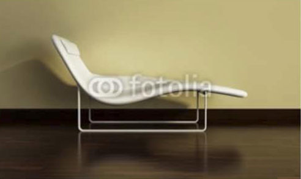

Chaises
de cuisine - de jardin - de salle à manger - de terrasseDécouvrez notre sélection de chaises pour tous les goûts et tous les besoins. Nous offrons une large gamme de chaises de cuisine, de jardin, de salle à manger et de terrasse. Parcourez notre catalogue pour trouver la chaise parfaite pour votre maison. Notre sélection comprend des chaises confortables et élégantes, adaptées à tous les styles d’intérieur. Que vous cherchiez une chaise pour votre cuisine, votre jardin, votre salle à manger ou votre terrasse, nous avons ce qu’il vous faut. N’hésitez pas à nous contacter pour toute question.
chaise longue
Chaises de cuisine
Découvrez notre sélection de chaises de cuisine pour tous les goûts et tous les besoins. Nous offrons une large gamme de chaises confortables et élégantes, adaptées à tous les styles d’intérieur. Parcourez notre catalogue pour trouver la chaise parfaite pour votre cuisine. Notre sélection comprend des chaises en bois, en métal, en plastique et en tissu, avec ou sans accoudoirs, pour s’adapter à toutes vos envies. Que vous cherchiez une chaise pour votre table de cuisine ou pour votre îlot central, nous avons ce qu’il vous faut. N’hésitez pas à nous contacter pour toute question.
Chaises de salle à manger
Découvrez notre sélection de chaises de salle à manger pour tous les goûts et tous les besoins. Nous offrons une large gamme de chaises confortables et élégantes, adaptées à tous les styles d’intérieur. Parcourez notre catalogue pour trouver la chaise parfaite pour votre salle à manger.Notre sélection comprend des chaises en bois, en métal, en plastique et en tissu, avec ou sans accoudoirs, pour s’adapter à toutes vos envies. Que vous cherchiez une chaise pour votre table de salle à manger ou pour votre coin repas, nous avons ce qu’il vous faut. N’hésitez pas à nous contacter pour toute question.
Chaises de jardin
Découvrez notre sélection de chaises de jardin pour tous les goûts et tous les besoins. Nous offrons une large gamme de chaises confortables et élégantes, adaptées à tous les styles d’extérieur. Parcourez notre catalogue pour trouver la chaise parfaite pour votre jardin. Notre sélection comprend des chaises en bois, en métal, en plastique et en tissu, avec ou sans accoudoirs, pour s’adapter à toutes vos envies. Que vous cherchiez une chaise pour votre terrasse, votre balcon ou votre pelouse, nous avons ce qu’il vous faut. N’hésitez pas à nous contacter pour toute question.
Chaises de terrasse
Découvrez notre sélection de chaises de terrasse pour tous les goûts et tous les besoins. Nous offrons une large gamme de chaises confortables et élégantes, adaptées à tous les styles d’extérieur. Parcourez notre catalogue pour trouver la chaise parfaite pour votre terrasse. Notre sélection comprend des chaises en bois, en métal, en plastique et en tissu, avec ou sans accoudoirs, pour s’adapter à toutes vos envies. Que vous cherchiez une chaise pour votre terrasse, votre balcon ou votre jardin, nous avons ce qu’il vous faut. N’hésitez pas à nous contacter pour toute question.
Voir les lampesContactez nous - Accueil